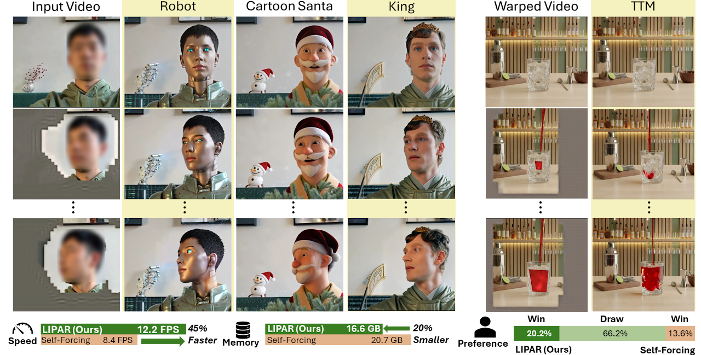

Live demo: Streaming LIPAR editing a webcam feed in real time at ~20 FPS on a single RTX 4090 (X thread)

NeurIPS 2026Featured
Training-Free Latent Inter-frame Pruning with Attention Recovery
Proposed a training-free framework that adapts pixel-space compression techniques to latent pruning for video generation. Achieved an average 1.53× throughput boost (19.3 FPS on an RTX 4090) and a 20% memory reduction, without compromising visual quality.